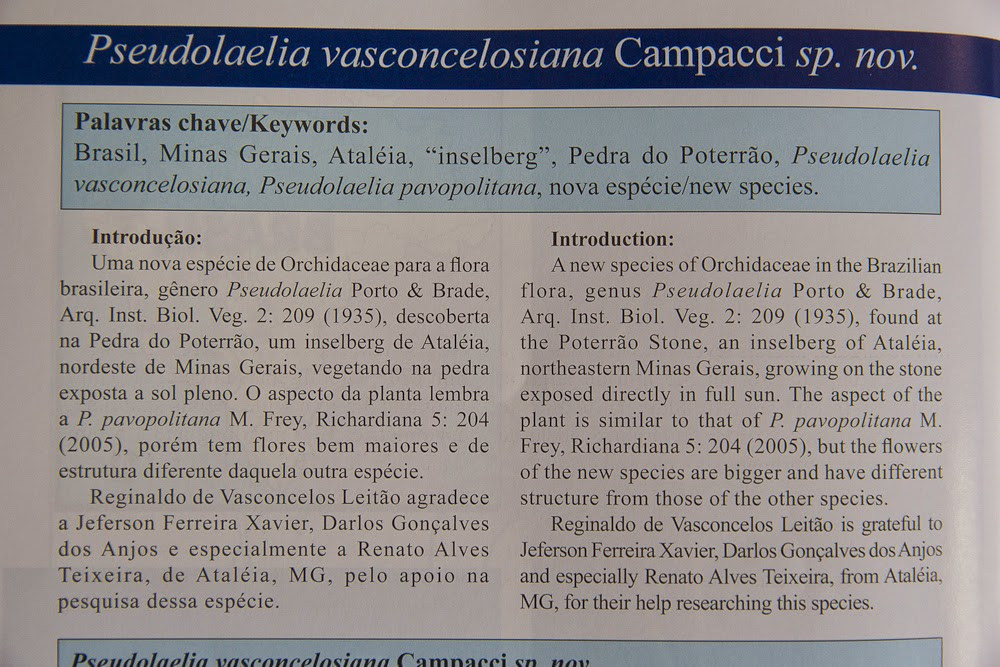

Mais espécies de orquídeas!
Escrito por Renato em
Siga-o nas redes sociais:
|
Pseudolaelia Vasconcelosiana Campacci.
Espécies de orquídeas ataleenses são catalogadas pela Ciências novamente. Trata-se de mais duas novas plantas que foram inscritas na Coletânea de Orquídeas Brasileiras, número 10, publicada em fevereiro de 2014. A revista, que é elaborada pelo taxonomista Marco Antonio Campacci, revela as novas espécies de orquídeas e híbridos naturais existentes em território brasileiro.
As duas espécies encontradas no município de Ataléia foram descobertas pelo orquidófilo, Reginaldo de Vasconcelos Leitão, de Governador Valadares. Uma das plantas estudadas é um híbrido natural encontrado no distrito de Tipiti em setembro de 2011. O híbrido, batizado de Encyclia xceliamirandae Campacci, é natural das matas secas e bem iluminadas daquela região e foi encontrada em uma altitude de aproximadamente 450 metros.

Coletânea de Orquídeas
Brasileiras. 2014
Uma nova espécie de orquídea também foi encontrada a 800 metros de altitude, na pedra do Poterrão, um inselberg bem próximo da cidade de Ataléia, em abril de 2011. Em referência a Reginaldo de Vasconcelos Leitão a pequena orquídea ataleense recebeu o nome científico de Pseudolaelia Vasconcelosiana Campacci.
Nessa publicação, há um agradecimento aos membros do blog Mundo das Montanhas pela humilde contribuição
na descoberta da pequena planta. Desta forma, nos sentimos honrados pela menção e nos colocamos à disposição
para novos projetos desta natureza.Veja imagens da publicação.
Descrição da orquídea e agradecimento a membros do MM

Pequena planta do Poterrão catalogada em publicação científica